Boxford bathroom remodeling contractors
Bathroom remodeling Boxford MA, planned and built by DeFaria
Bathroom remodeling Boxford MA projects start with a written plan and an owner-led walkthrough. Boxford bathroom remodeling from DeFaria Construction covers the rough-in, waterproofing, tile and fixtures, planned before demolition so the finished bathroom holds up to daily use and Massachusetts winters.
Our work
A real DeFaria bathroom transformation
Watch a bathroom we remodeled, from the first step to the final detail.
Get a Free Estimate
Local search focus
Boxford bathroom remodeling is about what happens behind the tile.
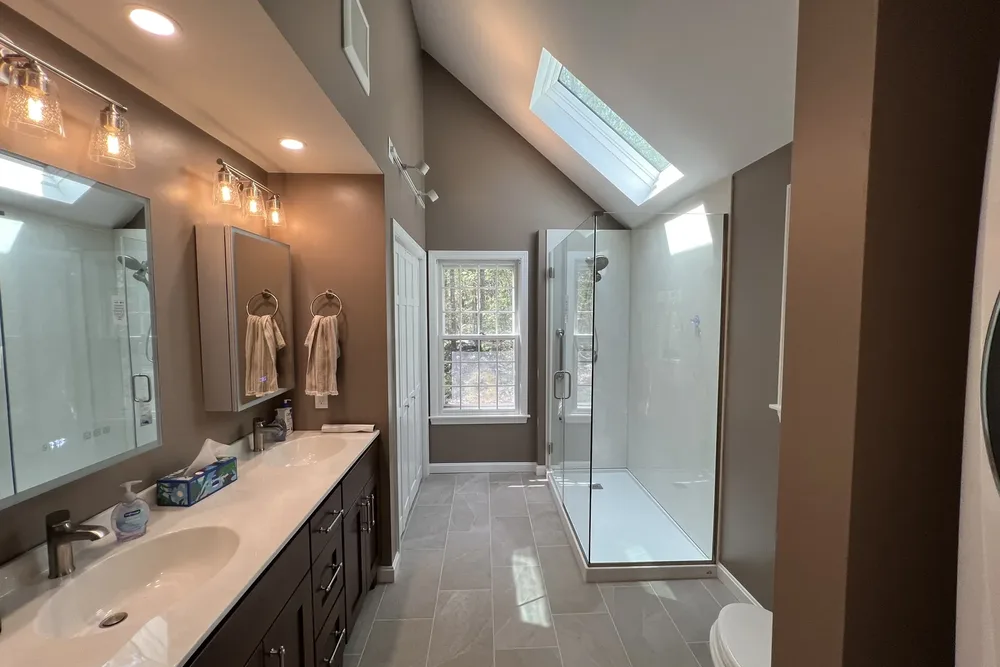
Across East Boxford, West Boxford, Boxford Village and Boxford Center, Boxford is mostly historic Colonials and newer single-family homes on large wooded and conservation lots across East and West Boxford. A lasting Boxford bathroom remodel depends on clean rough-in, proper waterproofing and ventilation before anyone sees a single tile.
This page is built for Boxford homeowners comparing bathroom remodeling contractors near them. It connects the Boxford search to project photos, neighborhoods, the full bathroom scope and a direct estimate path.
- Clear estimate conversations before the project starts.
- Direct communication with the homeowner from walkthrough to final walkthrough.
- Local coverage across Boxford and the wider Essex County area.
The scope
What a full Boxford bathroom remodel covers
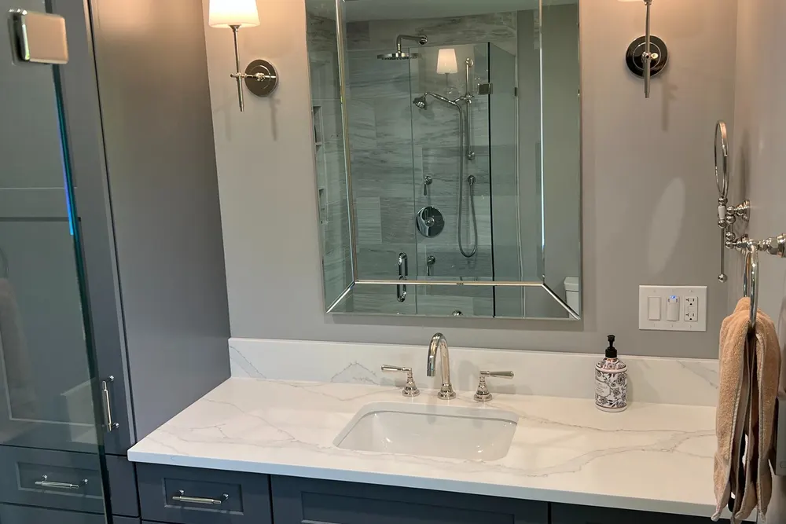
In Boxford, historic Colonials on large wooded and conservation lots in East and West Boxford often add access and site constraints.
- Clean rough-in for plumbing and any layout change, checked for waterproofing before tile.
- Tile, vanity, fixtures and lighting selected and coordinated for a durable, water-tolerant finish.
- Ventilation, moisture control and finish carpentry handled so the room holds up over time.
Boxford permits and inspections run through the Town of Boxford Building Department, and DeFaria keeps that step organized so scope and timeline stay realistic.
Cost
How much does a bathroom remodel cost in Boxford?
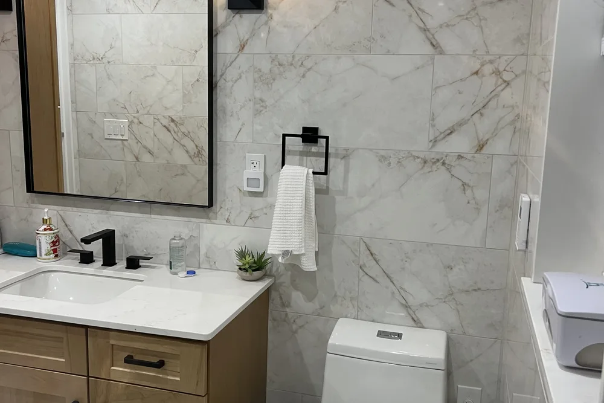
Most Boxford bathroom remodels land between $12,000 and $25,000 for a standard full renovation, while larger or high-end bathrooms reach $25,000 to $45,000 or more. Scope, not a flat rate, sets the price.
- Size of the bathroom and whether the layout or plumbing moves.
- Tile, vanity, fixture and lighting grade you choose.
- Age and condition of the home, including hidden rot or old plumbing.
- How much waterproofing, ventilation and finish carpentry the room needs.
Because historic Colonials on large wooded and conservation lots in East and West Boxford often add access and site constraints in Boxford, hidden conditions behind the walls are priced honestly at the walkthrough, not discovered mid-project.
DeFaria gives a fixed, itemized Boxford estimate at the walkthrough, so the price matches the actual scope instead of a guess.
Process
How a Boxford bathroom remodel runs, step by step
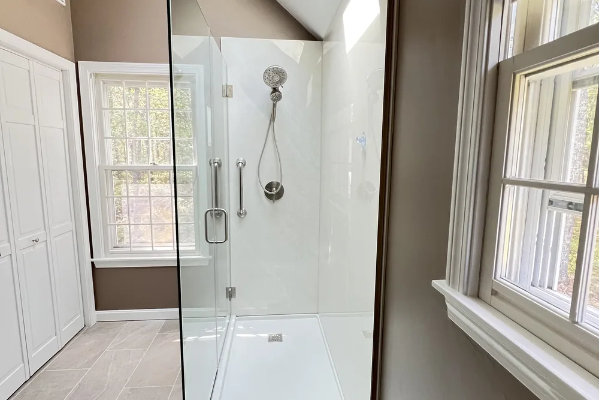
Most Boxford bathroom remodels follow the same clear path, so you always know what happens next.
- Walkthrough and a clear, itemized estimate.
- Design and material selection: tile, vanity, fixtures and lighting.
- Protection of the home and demolition of the existing bathroom.
- Plumbing and electrical rough-in for the new layout.
- Waterproofing and moisture control behind the tile.
- Tile, vanity, fixtures and finish carpentry.
- Paint, final details and a walkthrough before you sign off.
DeFaria coordinates the Boxford permit with the Town of Boxford Building Department before the rough-in, and keeps you updated at each step.
Plan on roughly 2 to 4 weeks for a Boxford bathroom once the materials are in, depending on scope.
Materials
Materials and finishes that hold up in Boxford bathrooms
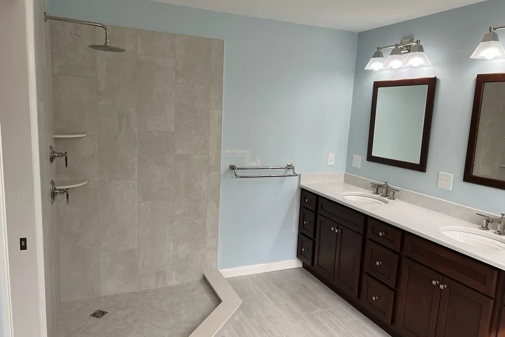
Essex County bathrooms deal with humidity, hard water and cold winters, so the finish is chosen for durability, not just looks.
- A tile assembly built on real waterproofing, not just cement board.
- Slip-aware floor tile and grout chosen for cleaning and wear.
- Ventilation and moisture control to protect the finish long term.
- Water-tolerant cabinetry, trim and coatings throughout.
In East Boxford, West Boxford and the rest of Boxford, historic Colonials on large wooded and conservation lots in East and West Boxford often add access and site constraints, so durability drives the material choices.
When to remodel
Signs it is time to remodel your Boxford bathroom
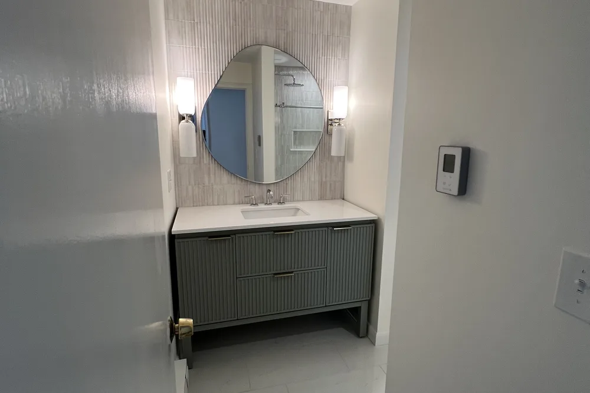
A few clear signs a Boxford bathroom is ready for a remodel:
- Water stains, soft flooring or a tub that never drains right.
- Mildew, musty smells or poor airflow.
- Tired tile, dated vanities and fixtures that keep failing.
- A layout that wastes the square footage you already have.
- Getting the home ready to list.
They are common across Boxford, from East Boxford to Boxford Village.
Layout and rough-in
Planning the layout and rough-in for your Boxford bathroom
The rough-in is where a Boxford bathroom project is won or lost. We start by measuring the existing space, then decide whether the current layout can stay or whether fixtures should move for better clearances and flow.
When plumbing has to be rerouted, we open the floor and walls, reset the drain slope, and verify venting meets code. Because historic Colonials on large wooded and conservation lots in East and West Boxford often add access and site constraints, we inspect the framing and subfloor for rot or sagging while everything is exposed in your Essex County house.
For Boxford homes from East Boxford to Boxford Village, we tie the bathroom remodeling to the realities of Essex County housing and keep Town of Boxford Building Department in the loop on approvals.
We match the bathroom remodeling to the local homes. Boxford is mostly historic Colonials and newer single-family homes on large wooded and conservation lots across East and West Boxford.
Around Boxford, that includes East Boxford, West Boxford, Boxford Village and Boxford Center, each planned on its own conditions.
- Measure the existing room and note load-bearing walls
- Decide whether to keep or shift the layout
- Open floor to correct drain slope and framing
- Check subfloor for rot before rebuilding
Waterproofing and ventilation
Waterproofing and ventilation built for Boxford winters
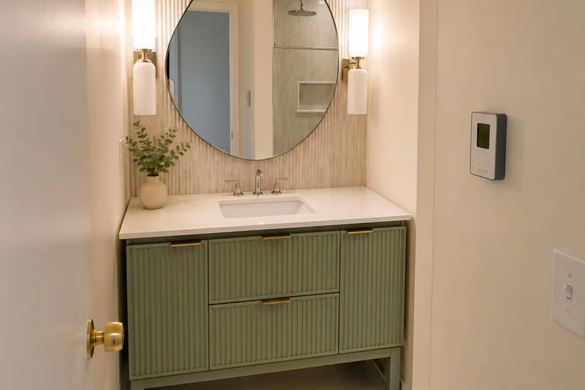
Skipping waterproofing is the most expensive mistake a Boxford homeowner can make, and it only shows up after the tile looks finished. We use bonded membranes, backer board and properly sloped pans so water drains instead of soaking into the structure.
Because winters here keep bathrooms closed and steamy, we size and duct the exhaust fan to actually clear the humidity, venting it straight outside your Essex County home rather than dumping it into an attic where it causes hidden damage.
For homes near East Boxford, West Boxford and Boxford Village, the Boxford bathroom remodeling is planned case by case, with Essex County permits handled by Town of Boxford Building Department.
Local context shapes the work: Boxford is mostly historic Colonials and newer single-family homes on large wooded and conservation lots across East and West Boxford. We plan the Boxford bathroom remodeling around exactly that.
- Waterproof pans sized for your Boxford shower
- Backer board rated for wet areas
- Humidity-sensing or timed fan for Essex County winters
- Protection against mold, rot and peeling paint
Tile, vanity, fixtures
Choosing tile, vanity and fixtures in Boxford
The finishes are the fun part, and also where Boxford homeowners can overspend or underbuy. We break down cost versus durability on flooring, wall tile, vanities, tops and faucets so you make each call with real numbers.
Expect roughly $12,000 to $25,000 for a standard full remodel and $25,000 to $45,000 or more for a large or high-end bathroom. We steer your Essex County budget toward materials that stay beautiful and functional for the long haul.
For Boxford homes from East Boxford to Boxford Village, we tie the bathroom remodeling to the realities of Essex County housing and keep Town of Boxford Building Department in the loop on approvals.
The Boxford bathroom remodeling is built for the neighborhood it sits in. Boxford is mostly historic Colonials and newer single-family homes on large wooded and conservation lots across East and West Boxford.
- Vanity options matched to your Boxford space
- Fixtures chosen for finish and long-term reliability
- High-end bathrooms run $25,000 to $45,000 or more
- Spend where Essex County families touch it daily
Showers and accessibility
Walk-in showers, tubs and aging-in-place in Boxford
A walk-in shower opens up a Boxford bathroom and removes the daily step-over of a tub, which is why so many homeowners choose one during a remodel. We size the pan, seating and controls around who uses the room most.
Aging-in-place is easy to design for when the walls are already open. We add grab-bar blocking, generous clearances and slip-resistant flooring so your Essex County bathroom stays safe and comfortable as needs change.
For Boxford homes from East Boxford to Boxford Village, we tie the bathroom remodeling to the realities of Essex County housing and keep Town of Boxford Building Department in the loop on approvals.
We match the bathroom remodeling to the local homes. Boxford is mostly historic Colonials and newer single-family homes on large wooded and conservation lots across East and West Boxford.
- Keep a soaking tub or convert to a shower
- Low-threshold entries for easier daily access
- Wider clearances planned for your Boxford layout
- Aging-in-place built in, not retrofitted later
Working with us
Working with a local Boxford bathroom contractor
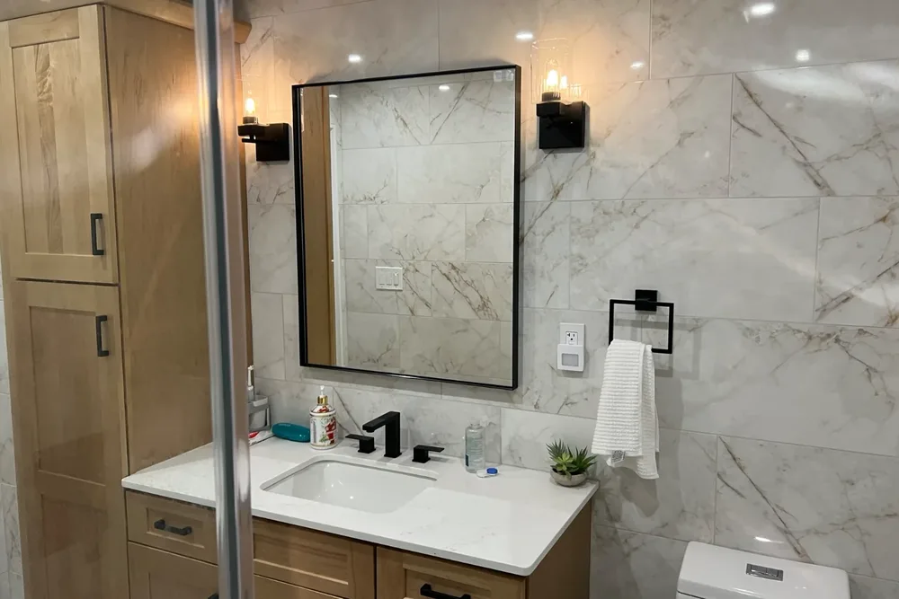
When you hire DeFaria Construction, you work directly with the owner, not a rotating crew of subs you never meet. We start with a walkthrough in Boxford, listen to what you want, and give you a fixed, itemized estimate so there are no surprises.
We are licensed and insured, carry an A+ BBB rating, and pull the right permits for the work. Boxford permits and inspections run through the Town of Boxford Building Department, and DeFaria keeps that step organized so scope and timeline stay realistic. Once materials are on site, a typical Essex County bathroom takes about 2 to 4 weeks to finish.
Whether the home sits near East Boxford, West Boxford or Boxford Village, the Boxford bathroom remodeling is built for local conditions across Essex County and run through Town of Boxford Building Department.
The Boxford bathroom remodeling is built for the neighborhood it sits in. Boxford is mostly historic Colonials and newer single-family homes on large wooded and conservation lots across East and West Boxford.
- Owner-led from walkthrough to final inspection
- Fixed, itemized estimate with no surprises
- Licensed, insured and A+ rated with the BBB
- About 2 to 4 weeks once materials arrive
Project photos
Bathroom Remodeling photos for Boxford homeowners
The Boxford bathroom remodeling page pairs local search intent with real project photos, so visitors see the finish level before requesting an estimate.
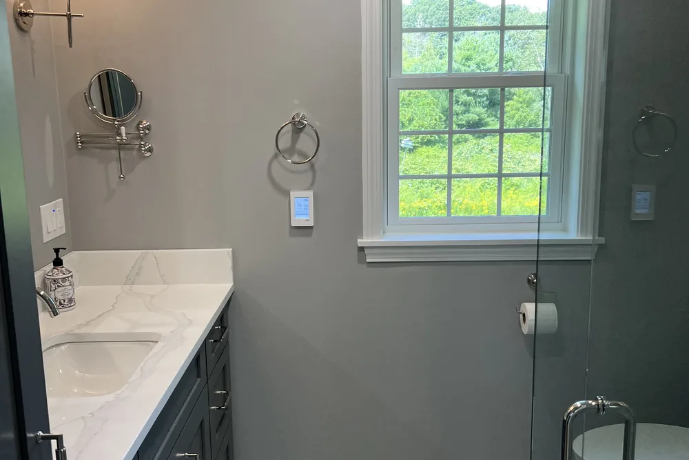
Areas covered
Bathroom Remodeling across Boxford neighborhoods
DeFaria Construction supports bathroom remodeling searches across Boxford and nearby Essex County towns, giving visitors enough local context to decide whether DeFaria is the right fit before they call.
From East Boxford to Boxford Center, Boxford homeowners get a bathroom remodeling permitted through the Town of Boxford Building Department and matched to how local homes are built.
- East Boxford
- West Boxford
- Boxford Village
- Boxford Center
Reviews
What Boxford homeowners say about DeFaria Construction
DeFaria Construction has a 5.0 rating from 15 reviews on Google. See all reviews on Google.
Luiz has been doing construction for us for close to 20 years. Large jobs are small. He does excellent work and we’re always very pleased with it. His quotes are always very reasonable. I would highly recommend him.
Very professional, efficient and thorough. They are extremely attentive to details and are fast-paced. Best contractor I’ve worked with!
Extremely happy that I went with DeFaria Construction to renovate our half bathroom. What I appreciated most about working with Luiz is that him and his crew were honest, reliable and they really cared about the details that were important to me! Everyday they came as scheduled and every evening…
Wells and septic
Bathrooms in Boxford homes on private wells and septic
Many Boxford homes run on a private well and a septic system, and that affects a bathroom remodel. Hard or iron-rich well water can stain fixtures and build up in valves and shower heads, so we talk about water treatment and choose fixtures that are easy to clean and service. On septic, we plan drains carefully and avoid anything that adds unnecessary load, and we point out which cleaning products are safer for the system.
Comfort
Heated floors, lighting and ventilation for Boxford winters
A heated floor is one of the upgrades homeowners appreciate most in a Massachusetts winter, and it is simplest to add when the floor is already open. Layered lighting, with a ceiling light, light at the mirror and a light in the shower, makes the room easier to use, and an exhaust fan sized for the room and ducted outside protects the finishes from moisture.
During the project
What to expect while your Boxford bathroom is remodeled
Demolition and protection come first, then framing and floor repairs, plumbing and electrical rough-in with inspections, waterproofing and backer board, tile, the vanity and fixtures, glass, paint and a final walkthrough. Choosing materials before demolition keeps the crew from waiting, and if the home has only one full bathroom we plan the sequence to keep a working toilet available as long as possible.
Septic and Title 5
Adding a bathroom or bedroom in Boxford: what Title 5 means
Most Boxford homes rely on a private septic system, so the first question we ask is not about tile. Under the Massachusetts Title 5 code a septic system is sized by the number of bedrooms, not the number of bathrooms. Replacing an existing bathroom inside the same footprint normally does not change the design flow. Turning a den into a bedroom with its own bath, or finishing a basement suite, can push the house past what the system was approved for, and that brings the Boxford Board of Health into the project.
Before the design is final we look at the septic records for the property, confirm the approved bedroom count and plan the new bathroom so it fits. If the layout does change the bedroom count, we tell you at the walkthrough, so the permit, the timeline and the budget account for it instead of becoming a surprise after demolition.
Historic villages
Bathroom remodeling in Boxford Village and West Boxford homes
Some of the oldest houses in town sit around Boxford Village and the West Boxford village center, and their bathrooms were usually added long after the house was built. That often means a bathroom tucked under a roof slope, joists notched decades ago for a drain line, and floors that are out of level by more than an inch. We open the room, check the framing and sister or reinforce joists before any tile goes down, because a stone or porcelain floor will crack on a floor that still flexes.
Interior work like tile, a vanity or a new shower is handled through the building permit. Exterior changes that can be seen from the road, such as a new window, a roof vent or a fan cap on a front wall, can need review in a historic area, so we route vents to a side or rear wall where possible and confirm the requirements with the town before ordering anything.
Logistics
Long driveways, wooded lots and protecting your septic field
Boxford lots are big, and that changes how a bathroom remodel is staged. A dumpster or a loaded delivery truck parked over a leach field can crush the pipes and turn a bathroom job into a septic repair. Before day one we mark the tank and the field, agree on where the dumpster, the trailer and material deliveries go, and lay protection on the driveway and lawn where trucks have to turn.
Tree cover on wooded lots also means more debris and shade, so we plan where tile and glass are stored to keep them dry and clean. In winter we confirm the driveway will be plowed to the door, because shower glass, a stone vanity top and a cast iron tub do not travel well on ice. These details sound small, but they are what keep a two to four week bathroom from stretching much longer.
Comparing quotes
How to compare bathroom remodeling quotes in Boxford
Two Boxford bathroom quotes can be thousands of dollars apart and still not describe the same job. Start with the license and registration: in Massachusetts a contractor remodeling an existing one to four family home should hold a Home Improvement Contractor registration, and the plumbing and electrical work should be done and permitted by licensed trades. Ask for both numbers in writing.
Then compare scope line by line. Look for the named waterproofing system in the shower, whether the fan is ducted outside, who repairs subfloor or framing if it is soft, and which items are allowances that can rise. Massachusetts law also limits the deposit a home improvement contractor can require before work starts to one third of the contract price, or the cost of special order materials. DeFaria puts the full scope, the allowances and the payment schedule in the written estimate.
Nearby towns
Bathroom remodeling near Boxford: Georgetown, Groveland and Andover
DeFaria works across the towns that border Boxford, and each one has its own page with local permits, housing and costs. If you are comparing projects or have family nearby, see our bathroom remodeling in Georgetown, MA, our bathroom remodeling in Groveland, MA and our bathroom remodeling in Andover, MA. For the materials, the waterproofing method and the step by step process we follow in every town, read the full bathroom remodeling scope and process.
Whichever town you are in, the estimate starts the same way: an owner-led walkthrough with Luiz DeFaria, a look behind the existing finishes where it matters, and a written, itemized price before anything is ordered.
Experience
Why this Boxford page is built for real homeowners, not just keywords.
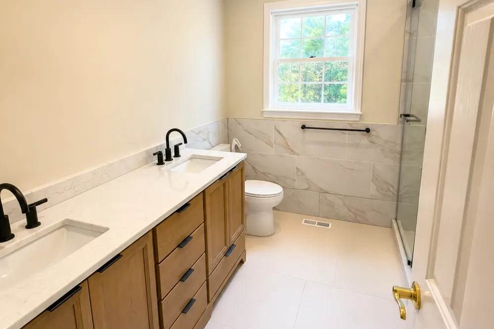
DeFaria Construction serves homeowners and businesses throughout Middlesex County and Essex County as a local, owner-run builder. With hands-on involvement from Luiz DeFaria and A+ BBB credibility, the Boxford bathroom page is written around real scope, waterproofing and finish coordination, not a city name dropped into a template.
DeFaria Construction is a licensed and insured local contractor with an A+ BBB rating and verified customer reviews, and every Boxford project is owner-led by Luiz DeFaria from the first walkthrough to the final one.
"Excellent work! I’m extremely happy with the results of my bathroom. Defaria Construction did an amazing job and was very professional, careful, and detail-oriented throughout the entire project. The workmanship and finishing touches were outstanding. You can really tell when a company takes pride…"
Allanderson Amorim · Google review

See what Boxford-area homeowners say: Read DeFaria Construction reviews on Google. BBB Accredited Business with an A+ rating since March 2024, verify on BBB.
The goal is to help someone searching for Boxford bathroom remodeling contractors understand the scope, the neighborhoods covered and how to start a direct conversation before requesting a free estimate.
Call (617) 893-2221 for a free estimateFAQ
Common questions about bathroom remodeling in Boxford
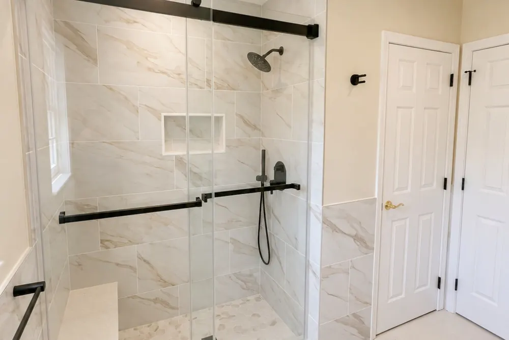
What bathroom remodeling work does DeFaria Construction handle in Boxford?
In Boxford DeFaria Construction handles plumbing rough-in, waterproofing, tile, vanities, fixtures, ventilation and finish carpentry for a full or partial bathroom remodel.
How much does a bathroom remodel cost in Boxford?
A Boxford bathroom remodel usually runs from about $12,000 to $25,000 for a standard full remodel, and $25,000 to $45,000 or more for a large or high-end bathroom. DeFaria gives a fixed, itemized estimate at the walkthrough so the price matches the real scope.
How long does a Boxford bathroom remodel take?
Most Boxford bathroom remodels take about 2 to 4 weeks once materials are on site, depending on the scope and whether the layout changes.
Can a small Boxford bathroom be remodeled without moving walls?
Often yes. Many Boxford bathrooms gain the most from better fixtures, tile, storage and lighting inside the existing footprint before anyone considers moving plumbing or walls.
Is DeFaria Construction licensed and insured?
Yes. DeFaria Construction is a licensed and insured contractor with an A+ BBB rating and verified reviews, and every Boxford project is owner-led by Luiz DeFaria.
Does DeFaria handle Boxford bathroom permits and inspections?
Yes. Boxford permits and inspections run through the Town of Boxford Building Department, and DeFaria keeps that step organized so scope and timeline stay realistic.
Does adding a bathroom in Boxford affect my septic system?
Replacing a bathroom in the same footprint usually does not, because Title 5 sizes a septic system by bedrooms. Adding a bedroom with a new bath can exceed the approved design flow, so DeFaria checks the septic records with the Boxford Board of Health before the design is final.
Can a dumpster or delivery truck damage my septic field during a remodel?
Yes. Heavy loads over a leach field can crush the pipes. On Boxford lots DeFaria marks the tank and field before work starts and agrees on safe spots for the dumpster and deliveries.
Do I need historic review for a bathroom remodel in Boxford?
Interior work like tile, fixtures and a new shower goes through the building permit. Exterior changes visible from the road, such as a new window or a vent on a front wall, can need review in a historic area, so DeFaria confirms the requirements with the town first.
How much deposit can a Massachusetts contractor ask for on a bathroom remodel?
Massachusetts law limits the deposit a home improvement contractor can require before work starts to one third of the contract price, or the cost of special order materials. DeFaria lists the payment schedule in the written estimate.